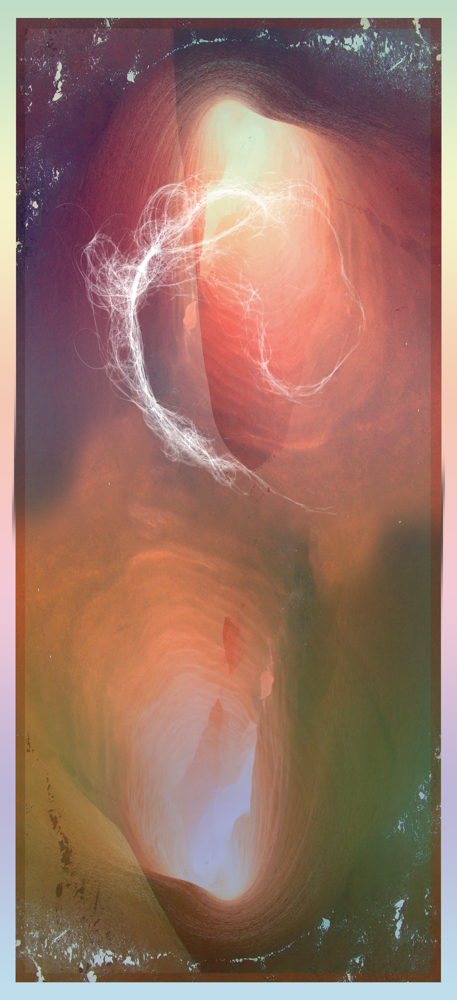

DRAMA + FRAME ///// Greg Mulcahy
ATONEMENT + UNTRANSLATABLE ///// Angela Woodward
from UMBILICAL HOSPITAL ///// Vi Khi Nao
LITTLE ME ///// Katy Mongeau
A BLOOD MORE RED, A RED SO DEEP ///// Ben Woodard
FIVE HYMNS ///// S.
THE ANIMAL OF EXISTENCE ///// Jared Daniel Fagen
LINES ///// Tipu Attar
A WINE OF WIZARDRY ///// George Sterling